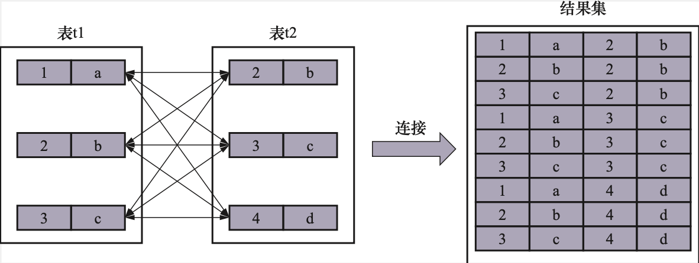
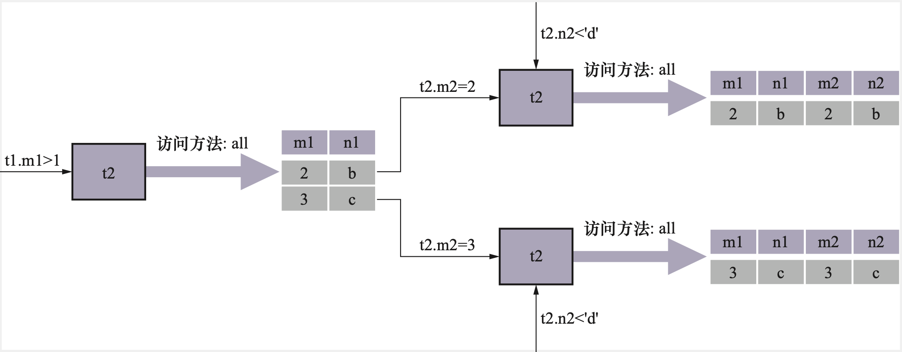
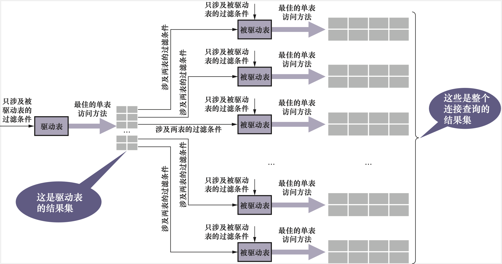

MySQL连接 -《MySQL是怎样运行的》ch11
Ch 11 两个表的亲密接触——连接的原理
关系型数据库中有个重要概念是Join（连接），但是通常存在两个误区
复杂的查询在一个连接语句中处理
连接导致慢查询
11.1 连接简介
11.1.1 连接的本质
从本质上说，连接就是把各个表格中的记录都取出来进行依次匹配，并把匹配后的组合发送给客户端。
如果连接查询的结果集包含一个表中的每一条集合与另外一个表格中的每一条记录相互匹配的组合，那么这样的结果集就可以称为笛卡尔积。
11.1.2 连接过程简介
如果不附加任何条件的连接产生的笛卡尔积可能是非常巨大的。所以最好是在连接时候过滤掉特定的组合。
连接查询的过滤条件可以分为两种
- 涉及单个表格的条件
- 涉及两个表格的条件：例如t1.m1 = t2.m2
例如下面这个查询语句
SELECT * FROM t1, t2 WHERE t1.m1 > 1 AND t1.m1 > t2.m2 AND t2.n2 < 'd';
连接的执行过程如下：
Step1. 首先确定第一个查询的表，这个表格称为驱动表格，选取代价最低的单表访问方法来执行对驱动表的单表查询
Step2. 步骤1中从驱动表中每获取到一条记录，都需要到t2表格中查找匹配的记录
注意流程是每获得一条驱动表数据，就立即到被驱动表格中寻找匹配的数据
所以在连接查询中，驱动表只需要访问一次，被驱动表需要访问多次
11.1.3 内连接和外连接
内连接和外连接的概念：
- 对于内连接的两个表，若驱动表中的记录在被驱动表中找不到匹配的记录，则该记录不会加入到最后的结果集
- 对于外连接的两个表，即时驱动表的数据在被驱动表中没有匹配的记录，也仍然需要加入到结果集
在MySQL中，根据选取的驱动表的不同，外连接可以细分为两种
- 左外连接：选取左边的表格作为驱动表
- 右外连接：选取右边的表格作为驱动表
对于外连接不需要加入结果集的的数据需要添加过滤条件，过滤条件在不同的地方存在不同语义
WHERE子句中的过滤条件
凡是不符合WHERE子句条件的记录都不会被加入到最后的结果集
ON子句中的过滤条件
对于外连接的驱动表中的数据来说，如果无法在被驱动表中找到匹配ON子句中过滤条件的记录，那么那么该驱动表记录仍然会被加入到接过去，但是被驱动表的字段使用NULL填充内连接的WHERE子句和ON子句是等价的
11.2 连接的原理
11.2.1 嵌套循环连接
前面提到过两个表的连接操作
如果有三个表进行连接，那就是使用前两个表连接得到的结果集作为新的驱动表
第3个表作为被驱动表，重复上述的过程
这就像是一个嵌套的循环，这种连接执行方式称为嵌套循环连接，是最简单也是最笨拙的一种连接算法
11.2.2 使用索引加快连接速度
对于驱动表创建索引可以加快单表访问方法的性能
同时可以对于被驱动表格创建索引，同样根据过滤条件选择创建索引，加快访问的速度
11.2.3 基于块的嵌套循环连接
对于被驱动表非常大的场景，多次访问驱动表可能导致大量的磁盘I/O
使用基于块的嵌套循环算法优化
将若干条驱动表的数据存在Join buffer（连接缓冲区）中，将被驱动表一次与多个驱动表记录进行匹配